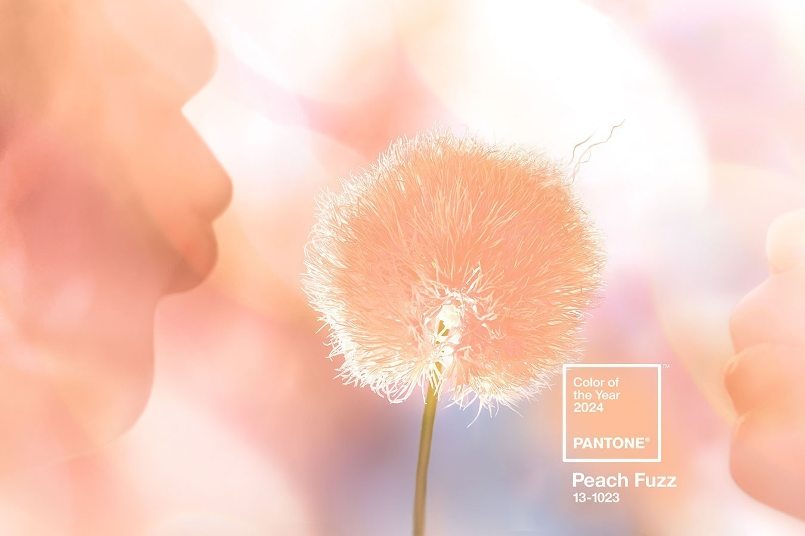
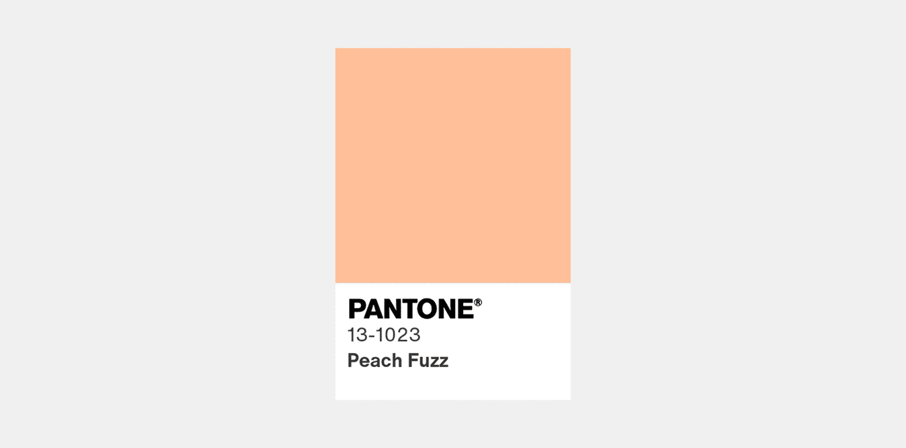

Pantone revela a Cor do Ano 2024
A Pantone, reconhecida autoridade global em cores, desempenha um papel crucial no mundo do design e da moda com a sua tradicional seleção da “Cor do Ano”. Esta escolha anual não é apenas uma previsão de tendências, mas também uma influência significativa que molda a criatividade e a inovação em diversas indústrias. Para 2024, a Pantone escolheu “Peach Fuzz” como a cor representativa do ano, uma decisão que promete impactar desde a moda e o design de interiores até a publicidade e o marketing.
Confira os detalhes dessa cor, o processo meticuloso por trás da seleção da Pantone e o impacto que esta cor terá em várias esferas do design!
A Cor do Ano 2024: Peach Fuzz
A Pantone escolheu “Peach Fuzz” como a Cor do Ano 2024, uma tonalidade que evoca sensações de calor, conforto e otimismo. Esta cor, com suas nuances suaves e convidativas, reflete uma tendência crescente em direção a cores que trazem uma sensação de serenidade e positividade. “Peach Fuzz” é uma cor que combina a suavidade do pêssego com um toque sutil de rosa, resultando em uma tonalidade que é ao mesmo tempo reconfortante e energizante. Sua aparência delicada e alegre tem o poder de iluminar espaços e designs, oferecendo uma sensação de leveza e frescor.
A escolha de “Peach Fuzz” como a Cor do Ano vai além de sua estética agradável. Ela simboliza um desejo coletivo por conexão, gentileza e uma abordagem mais suave à vida. Em um mundo que enfrenta desafios constantes, ela representa uma pausa tranquilizadora, um convite para encontrar alegria e conforto nas pequenas coisas. A influência dessa cor será sentida em várias áreas do design, desde a moda até o design de interiores e a embalagem de produtos. Sua versatilidade permite que seja facilmente combinada com uma ampla gama de cores, abrindo um leque de possibilidades criativas para designers e artistas.
Veja mais detalhes sobre a cor do ano em Designerd